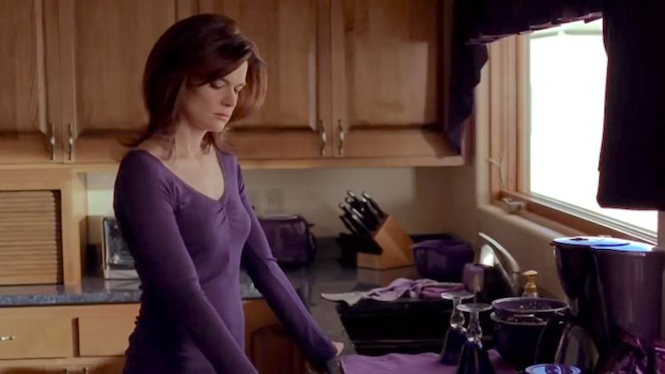
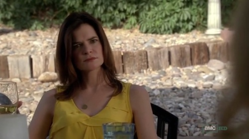

Marie Schrader é irmã de Sykler White, esposa de Hank e cunhada de Walter White. Marie trabalha como técnologa radiológica no Kleinman Radiology Center, um consultório médico de radiologia e exames. Ela não hesita em dar conselhos aos outros, mas frequentemente falha em praticar o que prega. Não há menor dúvida de sua paleta de cor, desde suas roupas,acessórios, objetos de decoração: tudo em Marie é roxo.
A escolha de roxo para Marie não é apenas por estética. A cor roxa está associada à realeza, nobreza e poder. Marie se enxerga como uma rainha, mostrando uma busca de poder e controle e agindo como se tivesse uma vida mais feliz e completa que a dos outros personagens, principalmente em comparação a sua irmã Skyler.
Na cena a seguir vemos a Marie roubando um salto alto roxo de uma loja, o que reforça sua busca por poder e luxúria. Em uma cena da primeira temporada, Marie rouba um objeto para dar de presente a filha recém nascida de Walter e Skyler, demonstrando querer sempre ser a superior em tudo que estiver envolvida.
Um detalhe interessante é que quando Hank desmascara Walter White, Marie usa amarelo (simbolizando a clareza de ideias, esclarecimento e etc.)
Três episódios antes de Ozymandias, Marie intrigou os fãs da série por mudar sua paleta de cores, usando a cor preta nos três episódios seguidos. Assista a série para saber do desfecho!